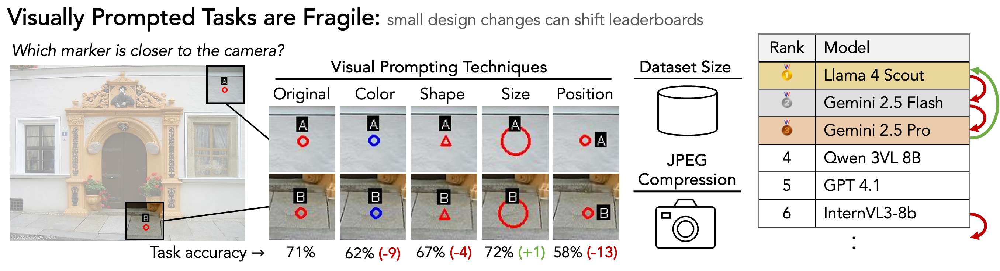
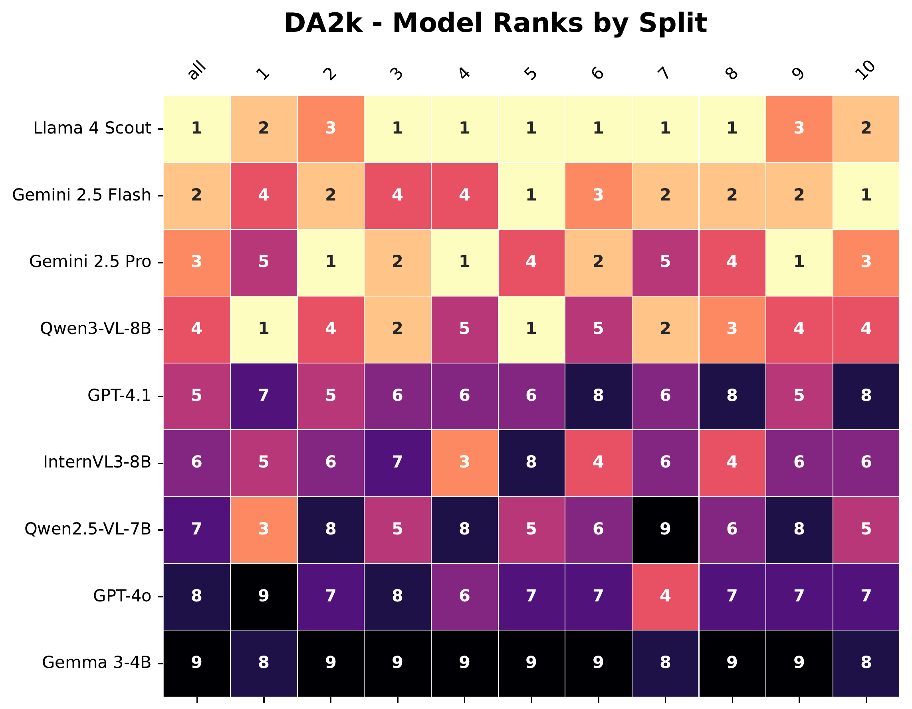
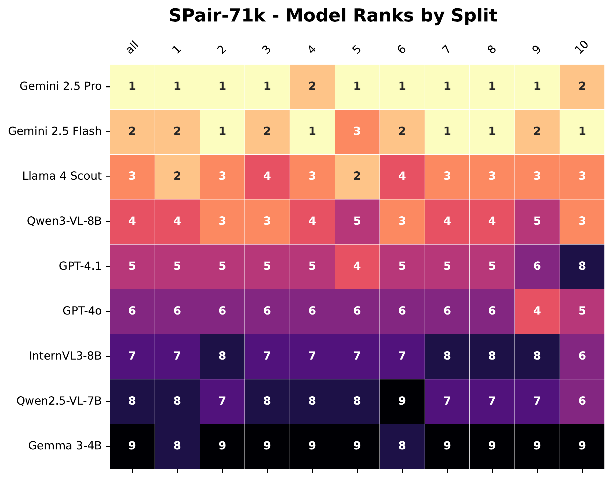

Figure 1. Small, seemingly irrelevant changes in visual prompting dramatically alter VLM predictions. Left: Qwen2.5-VL accuracy under different visual marker variants. Right: such variations can reorder entire leaderboards, with model rankings shifting even when nothing about the underlying task changes.
Abstract
A key challenge in evaluating VLMs is testing models' ability to analyze visual content independently from their textual priors. Recent benchmarks probe visual perception through visual prompting, where questions about visual content are paired with coordinates to which the question refers, with the coordinates explicitly marked in the image itself. While these benchmarks are an important part of VLM evaluation, we find that existing models are surprisingly fragile to seemingly irrelevant details of visual prompting: simply changing a visual marker from red to blue can completely change rankings among models on a leaderboard. By evaluating nine modern open- and closed-source VLMs on two visually prompted tasks, we demonstrate how details in benchmark setup, including visual marker design and dataset size, have a significant influence on model performance and leaderboard rankings. These effects can even be exploited to lift weaker models above stronger ones; for instance, slightly increasing the size of the visual marker results in InternVL3-8B ranking alongside or better than much larger models like Gemini 2.5 Pro. Furthermore, we find that even ostensibly irrelevant modeling and inference decisions like JPEG compression can change the model lineup while similar interventions to non-visually prompted tasks have little effect on the results. To address this instability, we curate existing datasets to create VPBench, a larger visually prompted benchmark with 16 visual marker variants. We open-source this benchmark as well as our analysis tools to further facilitate robust evaluation of VLMs.
What are visually prompted tasks?
Despite rapid progress in vision-language models (VLMs), their visual perception capabilities remain underexplored. Visual prompting has emerged as a targeted paradigm: by marking regions in an image with visual markers (such as circles, boxes, or dots) and posing spatial or perceptual questions, these tasks assess low-level visual understanding that humans solve effortlessly—problems we can answer "in a blink." This stands in contrast to the knowledge-centric reasoning required by benchmarks such as MME or MMMU.
However, we find that model performance on these visually prompted evaluations is surprisingly sensitive to seemingly minor design choices in the benchmark itself. Variations in the size, style, or layout of visual markers can substantially affect accuracy and even reorder model rankings.
Figure 2. Examples of visually prompted tasks including relative depth estimation and semantic correspondence.
Key findings
Data size matters
Random resampling of similarly-sized image subsets can substantially reorder model rankings, even when the subsets are statistically indistinguishable in difficulty. Small benchmark sizes amplify the impact of incidental sampling variation, making it difficult to distinguish genuine differences in model capability from sampling artifacts.
Marker style matters
Seemingly irrelevant design choices—such as switching a red circle to a blue square—can cause accuracy swings of up to 21% on the exact same image-question pairs. These fluctuations are severe enough to completely reshuffle leaderboards, effectively allowing weaker models to rank above stronger ones based solely on marker style.
Implementation subtleties
JPEG compression quality—a factor imperceptible to human evaluators—produces statistically significant changes in accuracy and rankings on visually prompted tasks. Importantly, these effects are specific to visual prompting; applying the same intervention to traditional VLM benchmarks shows negligible impact.
Sample size matters
Existing visually prompted benchmarks like BLINK are surprisingly small, with only 224 samples for tasks like relative depth estimation and semantic correspondence. Random resampling of image subsets matched in size to BLINK from a larger pool can substantially reorder model rankings, even when the subsets are statistically indistinguishable in difficulty. This finding reveals that small benchmark sizes amplify the impact of incidental sampling variation, making it difficult to distinguish genuine differences in model capability from sampling artifacts.

DA2k: Model rankings across different data splits.

SPair-71k: Model rankings across different data splits.
Visual Marker Matters
We evaluated models across 16 distinct visual marker styles, systematically varying attributes like color, shape, size, and label placement to test robustness. We found that seemingly irrelevant design choices—such as switching a red circle to a blue square—can cause accuracy swings of up to 21% on the exact same image-question pairs. These fluctuations are severe enough to completely reshuffle leaderboards, effectively allowing weaker models to rank above stronger ones based solely on the style of the visual prompt.
Interactive marker comparison
Select a dataset and marker variant to see how accuracy and rankings change compared to the default.
Model
Rank
Δ Rank
Score
Figure 6 (interactive): Accuracy and ranking changes across marker variants.
Select a dataset and marker above to compare with the default evaluation.
Low level implementation details matter
Even ostensibly irrelevant implementation details can significantly impact model performance on visually prompted tasks. We find that JPEG compression quality—a factor imperceptible to human evaluators—produces statistically significant changes in accuracy and rankings. Importantly, these compression effects are specific to visually prompted benchmarks; applying the same intervention to traditional VLM benchmarks like MMBench shows negligible impact, highlighting the unique fragility of visual prompting evaluations.
Figure 3. JPEG compression quality can reorder rankings on visually prompted tasks (BLINK RD),
while rankings on traditional benchmarks (MME) remain comparatively stable.
Gaming benchmarks by changing markers
We demonstrate that visually prompted leaderboards can be effectively "gamed" by cherry-picking marker styles that favor specific models. For example, simply increasing the font size of a visual marker allowed us to artificially lift a weaker model, InternVL3-8B, to rank higher than the much larger Gemini 2.5 Pro.
Default
Standard Evaluation
Model
Rank
Score
Llama 4 Scout
#1
89.41%
Gemini 2.5 Flash
#2
77.65%
Gemini 2.5 Pro
#2
77.65%
InternVL3-8B
#4
76.47%
Qwen3-VL-8B
#4
76.47%
GPT-4.1
#6
75.29%
GPT-4o
#7
71.76%
Qwen2.5-VL-7B
#8
70.59%
Gemma 3-4B
#9
52.94%
Deflate InternVL3-8B
Marker Type Square
Model
Rank
Score
Llama 4 Scout
#1
90.59%
Gemini 2.5 Pro
#2
84.71%
Qwen3-VL-8B
#3
77.65%
GPT-4.1
#3
77.65%
Gemini 2.5 Flash
#5
76.47%
GPT-4o
#6
75.29%
Qwen2.5-VL-7B
#7
67.06%
InternVL3-8B
#8
63.53%
Gemma 3-4B
#9
55.29%
Inflate InternVL3-8B
Font Scale 1.0
Model
Rank
Score
Llama 4 Scout
#1
85.88%
Gemini 2.5 Flash
#2
81.18%
InternVL3-8B
#3
77.65%
Qwen3-VL-8B
#3
77.65%
Gemini 2.5 Pro
#5
76.47%
GPT-4o
#6
72.94%
GPT-4.1
#7
71.76%
Qwen2.5-VL-7B
#8
70.59%
Gemma 3-4B
#9
49.41%
Figure: Performance comparison — optimizing for InternVL3-8B's ranking on
BLINK relative depth by changing the visual marker.
Citation
BibTeX
@inproceedings{vptblink2026fragile,
title = {Visually Prompted Benchmarks Are Surprisingly Fragile},
author = {Haiwen Feng and Long Lian and Lisa Dunlap and Jiahao Shu and XuDong Wang and Renhao Wang and Trevor Darrell and Alane Suhr and Angjoo Kanazawa},
booktitle = {Proceedings of the IEEE/CVF Conference on Computer Vision and Pattern Recognition (CVPR)},
year = {2026},
note = {Submission},
}